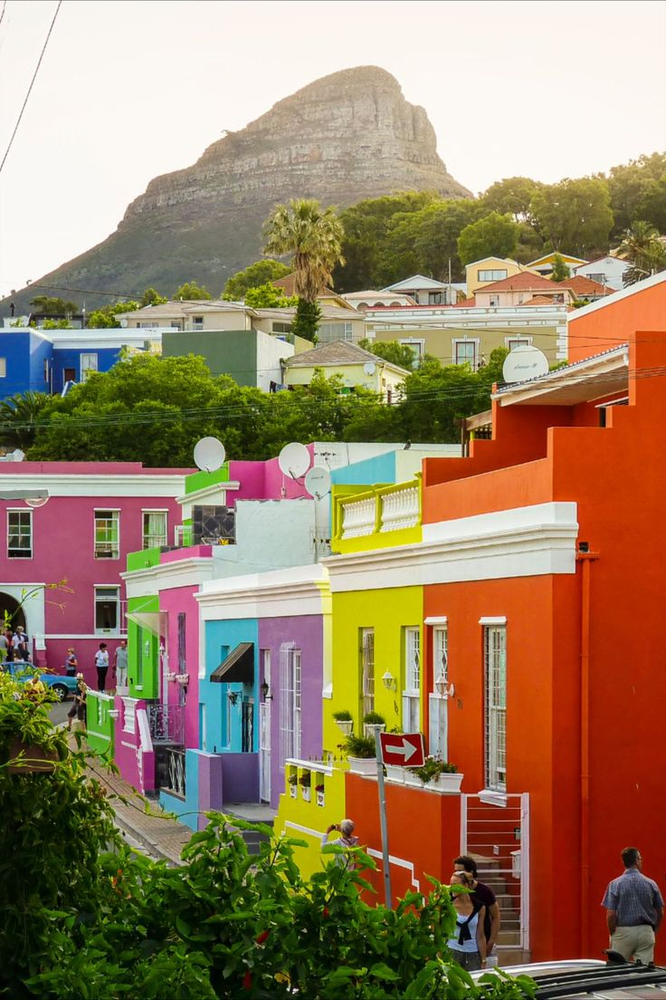

Quanto costa davvero un viaggio in Sudafrica nel 2025
Voli da Roma, alloggi da Cape Town al Kruger, cibo, safari, rent-a-car: ho rifatto i conti con scontrini alla mano. Spoiler: meno di quello che pensi, ma con sorprese.
Leggi l'articolo →
Cape Town in 5 giorni: l'itinerario che mi ha cambiato
Dal Bo-Kaap al Capo di Buona Speranza, passando per i posti che non trovi nelle guide.
Leggi →
Safari al Kruger: tutto quello che nessuno ti dice
Self-drive vs lodge guidato. Quale stagione. E perché il "Big Five" è solo metà della storia.
Leggi →
11 lingue ufficiali: cosa serve sapere prima di partire
Inglese basta? Sì. Ma capire perché ce ne sono 11 cambia tutto il viaggio.
Leggi →
Load shedding: come si vive senza luce 4 ore al giorno
Una delle prime cose che ti spiazza. E come tutti i locali si sono organizzati.
Leggi →Affittare auto in Sudafrica: prezzi, trucchi e errori
Da Cape Town al Kruger sono 1.700 km. Ecco come ho speso meno della metà degli altri.
Leggi →
Garden Route: 7 giorni tra oceano, foreste e baie
La strada più bella del Sudafrica. Tappe, alloggi e quando fermarsi davvero.
Leggi →
Township tour: andarci o non andarci?
Tema delicato. Te lo racconto dopo essere andato a Langa con un amico locale.
Leggi →